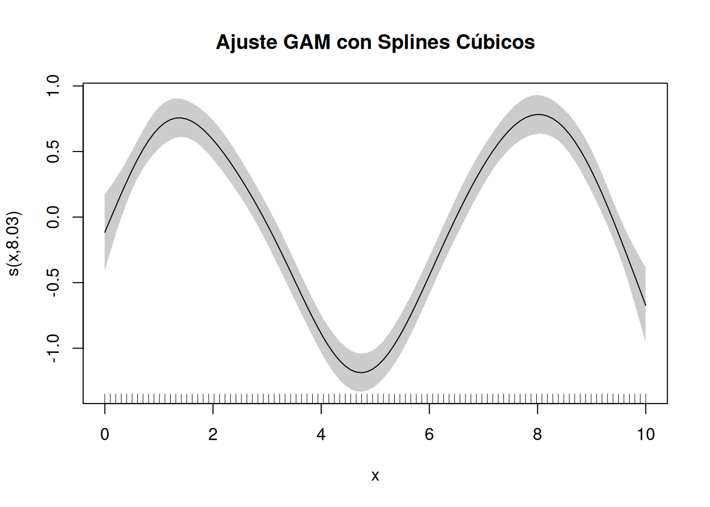
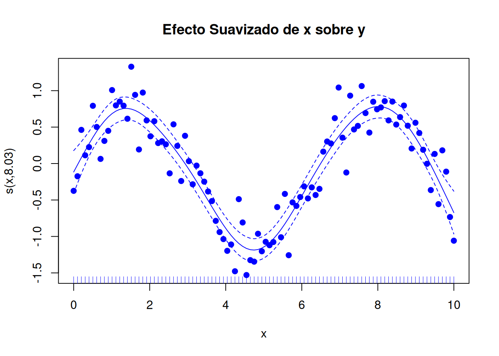
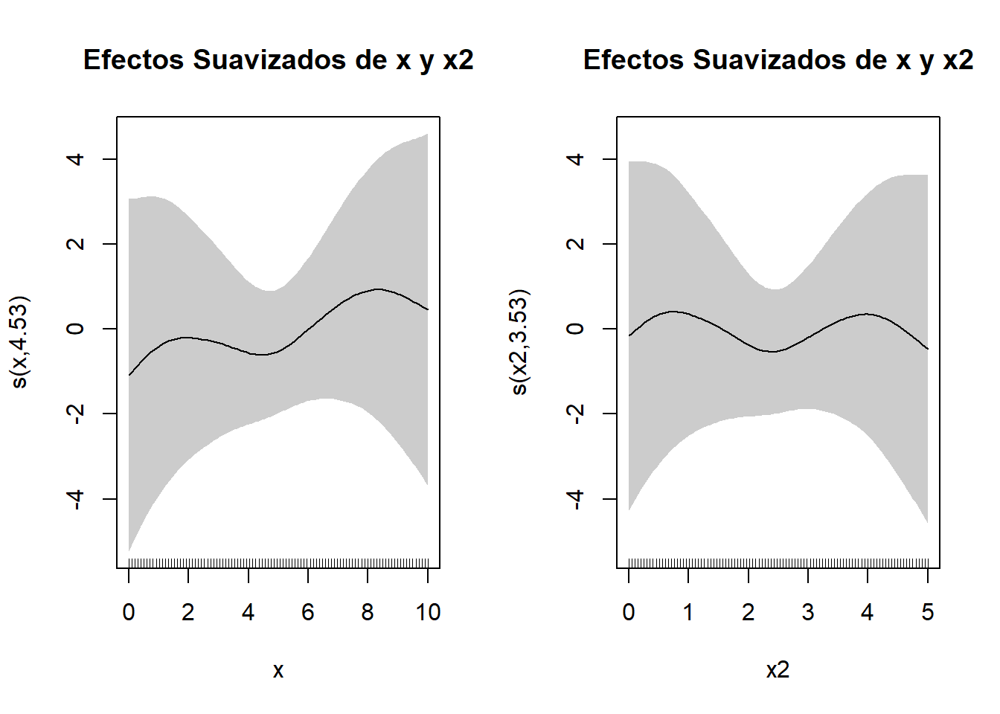
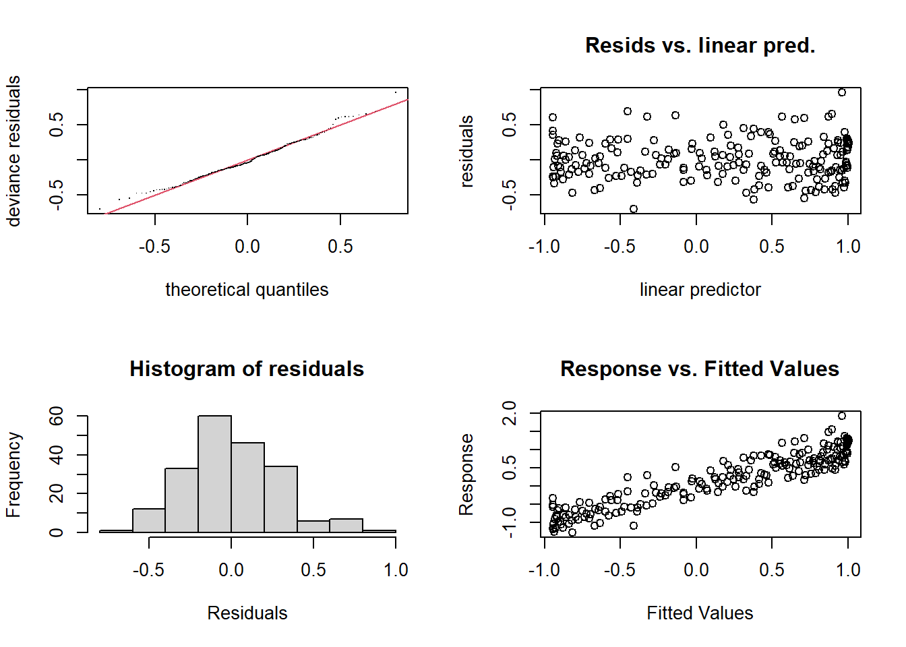
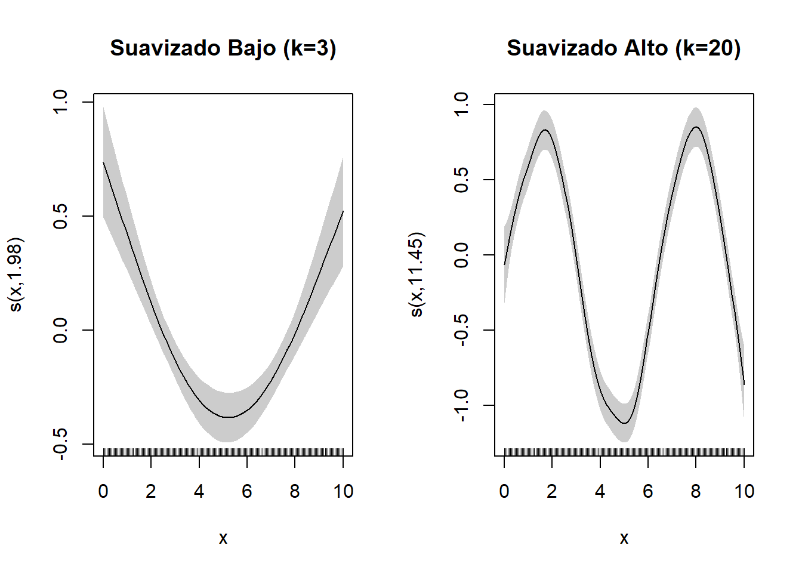

6Otros modelos de regresión: Modelos Aditivos Generalizados (GAMs)
En el análisis de datos y la modelización estadística, a menudo asumimos que las relaciones entre las variables independientes y la variable dependiente son lineales o que pueden transformarse fácilmente para cumplir con esta suposición. Sin embargo, en muchos contextos del mundo real, las relaciones entre las variables son no lineales y complejas, lo que limita la efectividad de los modelos de regresión tradicionales como la regresión lineal o polinomial.
Los Modelos de Regresión Aditiva Generalizada (GAMs) ofrecen una solución poderosa y flexible para este problema. Los GAMs permiten modelar relaciones no lineales sin necesidad de especificar de antemano la forma exacta de la no linealidad (Hastie 2017). En lugar de ajustar una única función global para todos los predictores, los GAMs aplican funciones de suavizado a cada variable independiente por separado, lo que permite capturar patrones complejos y sutiles en los datos.
Un Modelo Aditivo Generalizado (GAM) es una extensión de los Modelos Lineales Generalizados (GLM) vistos en el tema anterior y que permite que la relación entre la variable dependiente y las variables independientes sea no lineal y flexible. En un GAM, la variable dependiente se modela como una suma de funciones suavizadas de las variables independientes:
\(g(\mu)\) es la función de enlace que conecta la media de la variable dependiente (\(\mu\)) con los predictores.
\(\beta_0\) es el intercepto del modelo.
\(f_i(X_i)\) son funciones suavizadas que capturan la relación entre cada predictor \(X_i\) y la variable dependiente.
A diferencia de la regresión lineal, donde los predictores tienen una relación lineal con la variable dependiente, en los GAMs cada predictor puede tener una forma funcional diferente, permitiendo capturar curvas, patrones no lineales y efectos complejos en los datos.
Ventajas de los GAMs
Flexibilidad para modelar No Linealidades:
Los GAMs permiten capturar relaciones no lineales complejas sin necesidad de especificar una forma funcional exacta.
Interpretabilidad:
A pesar de su flexibilidad, los GAMs siguen siendo interpretables, ya que el efecto de cada predictor puede visualizarse por separado.
Evita el sobreajuste:
A través de técnicas de suavizado controlado, los GAMs pueden evitar el sobreajuste al equilibrar la complejidad del modelo con la precisión de las predicciones.
Adaptabilidad a diferentes tipos de datos:
Los GAMs pueden aplicarse a variables continuas, categóricas y de conteo, lo que los hace útiles en una amplia variedad de contextos.
Los principales casos de uso de los GAMS son:
Relaciones no lineales complejas: Cuando se sospecha que la relación entre las variables no es lineal y los modelos polinomiales no capturan adecuadamente la estructura de los datos.
Interacciones complejas entre variables: Cuando los efectos de las variables pueden variar dependiendo del contexto o de otros predictores.
Datos con distribuciones no estándar: En combinación con funciones de enlace, los GAMs pueden manejar diferentes tipos de distribuciones en la variable dependiente, como datos de conteo, binarios o continuos sesgados.
Los Modelos Aditivos Generalizados (GAMs) tienen aplicaciones en una amplia variedad de disciplinas debido a su capacidad para capturar relaciones no lineales complejas. En medicina y epidemiología, se utilizan para modelar el riesgo de enfermedades en función de múltiples factores de riesgo que interactúan de manera no lineal, permitiendo identificar patrones sutiles en la salud de las poblaciones. En economía y finanzas, los GAMs son útiles para analizar la relación entre variables económicas, como la inflación y el crecimiento del PIB, donde las interacciones y los efectos pueden variar a lo largo del tiempo. En el campo de las ciencias ambientales, permiten modelar la relación entre la temperatura y la concentración de contaminantes atmosféricos, lo cual es crucial para entender el impacto del cambio climático. Finalmente, en marketing y negocios, los GAMs ayudan a analizar el comportamiento del cliente, como la probabilidad de compra, en función de variables como el ingreso y la edad, proporcionando insights valiosos para la toma de decisiones estratégicas.
6.1 Fundamentos de los GAMs
Los Modelos Aditivos Generalizados (GAMs) son una extensión de los Modelos Lineales Generalizados (GLM) que permiten capturar relaciones no lineales entre la variable dependiente y las variables independientes. Mientras que los GLM asumen una relación lineal (o lineal después de una transformación mediante una función de enlace), los GAMs relajan esta suposición al permitir que cada predictor tenga su propia forma funcional no paramétrica.
Donde: - \(g(\mu)\) es la función de enlace que relaciona la media de la variable dependiente (\(\mu\)) con el predictor lineal. - \(\beta_0, \beta_1, \dots, \beta_p\) son los coeficientes del modelo que representan el efecto lineal de cada predictor.
Donde \(f_i(X_i)\) son funciones suavizadas que capturan la relación (posiblemente no lineal) entre el predictor \(X_i\) y la variable dependiente.
En los GLM, los efectos de los predictores son estrictamente lineales o transformados de forma lineal. En los GAMs, la relación puede ser cualquier forma no paramétrica, determinada por los datos. Los GAMs ofrecen mayor flexibilidad al permitir que la forma de la relación entre cada predictor y la respuesta sea modelada directamente a partir de los datos. Aunque los GAMs son más flexibles, siguen siendo interpretables, ya que el efecto de cada variable puede visualizarse y analizarse individualmente.
6.1.1 Suavizado en los GAMs
El componente fundamental de los GAMs es el uso de funciones de suavizado, que permiten modelar relaciones no lineales de manera flexible y controlada. El suavizado evita el sobreajuste (overfitting) al no intentar seguir cada fluctuación en los datos, sino al capturar las tendencias generales subyacentes.
El suavizado consiste en ajustar una curva a los datos de tal manera que se capturen las tendencias generales sin que el modelo sea demasiado sensible al ruido o a las fluctuaciones aleatorias. En el contexto de los GAMs, cada predictor tiene su propia función de suavizado que determina cómo se ajusta la relación entre esa variable y la variable dependiente.
Donde \(s_i(X_i)\) representa una función suavizada para el predictor \(X_i\).
El grado de suavizado controla cuánto sigue el modelo las fluctuaciones de los datos:
Suavizado bajo: El modelo se ajusta demasiado a los datos, capturando incluso el ruido aleatorio. Esto puede llevar al sobreajuste.
Suavizado alto: El modelo puede no capturar adecuadamente la estructura subyacente de los datos, llevando al subajuste (underfitting).
El criterio de suavizado óptimo se selecciona automáticamente mediante técnicas como la minimización del criterio de información de Akaike (AIC) o el uso de validación cruzada.
El suavizado en los Modelos Aditivos Generalizados (GAMs) ofrece múltiples ventajas que los convierten en una herramienta poderosa para el análisis de datos complejos. En primer lugar, permite capturar no linealidades complejas, detectando patrones que no pueden ser representados adecuadamente por términos lineales o polinomiales simples. Esta flexibilidad es crucial para modelar relaciones reales que rara vez son estrictamente lineales. Además, el suavizado ayuda a evitar el sobreajuste; a diferencia de los polinomios de alto grado, que pueden generar oscilaciones indeseadas y seguir de manera excesiva las fluctuaciones del ruido en los datos, el suavizado controlado proporciona una representación más estable y generalizable de la relación entre las variables. Finalmente, una de las características más valiosas del suavizado en GAMs es su interpretación intuitiva. Las funciones suavizadas pueden visualizarse de manera clara y directa, lo que facilita la comprensión del impacto de cada predictor sobre la variable de respuesta, haciendo que los GAMs sean no solo potentes, sino también accesibles desde el punto de vista interpretativo.
6.1.2 Splines
En los GAMs, las funciones de suavizado se implementan comúnmente mediante splines, que son funciones polinómicas definidas por tramos. Estas permiten una flexibilidad controlada al ajustar diferentes tramos de los datos mientras se mantiene la continuidad y la suavidad en los puntos de unión (nudos).
Splines Lineales:
Son polinomios de primer grado ajustados por tramos. Aunque permiten cierta flexibilidad, pueden generar ángulos agudos en los puntos de unión.
Splines Cúbicos:
Utilizan polinomios de tercer grado en cada tramo, asegurando continuidad en la primera y segunda derivada en los nudos. Los splines cúbicos son los más utilizados en la práctica debido a su capacidad para capturar curvaturas suaves sin introducir oscilaciones no deseadas.
Los splines penalizados añaden una penalización al modelo para controlar la suavidad de la curva. Esto se logra añadiendo un término de penalización al proceso de ajuste que limita la complejidad de la función suavizada.
# Visualización de la función suavizadaplot(modelo_gam, main ="Ajuste GAM con Splines Cúbicos", shade =TRUE)

6.2 Interpretación de los resultados
Después de ajustar el modelo, el siguiente paso es interpretar los resultados proporcionados por la función summary() de R.
El comando summary(modelo_gam) proporciona la siguiente información clave:
Resumen de la suavización:
edf (effective degrees of freedom): Indica el grado de flexibilidad del suavizado.
Un edf cercano a 1 sugiere una relación lineal.
Un edf mayor que 1 indica una relación no lineal.
Significancia de los predictores:
p-values: Indican si la función suavizada para cada predictor es significativa. Un valor \(p < 0.05\) sugiere que la relación entre el predictor y la variable dependiente es estadísticamente significativa.
Medidas de ajuste:
Deviance explained: Similar al \(R^2\) en regresión lineal, indica el porcentaje de la variabilidad de los datos explicada por el modelo.
GCV score y AIC: Utilizados para evaluar la calidad del ajuste y comparar diferentes modelos.
El intercepto (0.01852) no es significativo, lo que sugiere que el valor medio de \(y\) cuando \(x = 0\) no difiere significativamente de cero.
La función suavizada \(s(x)\) tiene un edf de 7.54, indicando que la relación entre \(x\) e \(y\) es altamente no lineal.
El valor p (<2e-16) para \(s(x)\) sugiere que la relación no lineal es estadísticamente significativa.
El 82.1% de la devianza explicada indica que el modelo captura bien la variabilidad de los datos.
Un GCV (Generalized Cross-Validation) bajo indica un buen ajuste.
Una de las principales ventajas de los GAMs es la posibilidad de visualizar fácilmente la relación entre cada predictor y la variable dependiente. La función plot() de mgcv permite crear gráficos claros e intuitivos de los efectos suavizados.
Ejemplo
# Visualización del efecto suavizado de x en yplot(modelo_gam, shade =TRUE, main ="Relación No Lineal entre x e y")
El área sombreada alrededor de la curva representa el intervalo de confianza al 95%. La forma de la curva muestra la relación entre \(x\) e $ y$; en este caso, debería reflejar una forma sinusoidal. Si la curva es recta, la relación es aproximadamente lineal.
Es posible personalizar el gráfico para mejorar la presentación:
Ejemplo
# Personalización avanzada del gráficoplot(modelo_gam, residuals =TRUE, # Muestra los residuospch =19, # Estilo de los puntos de datoscol ="blue", # Color de la curva suavizadaseWithMean =TRUE, # Muestra intervalos de confianza ajustados al promediorug =TRUE, # Añade marcas en el eje x para indicar la densidad de los datosmain ="Efecto Suavizado de x sobre y")

Si el modelo incluye múltiples predictores suavizados, plot() creará un gráfico para cada uno.
Ejemplo
# Simulación de un segundo predictorset.seed(123)x2 <-seq(0, 5, length.out = n)y2 <-sin(x) +log(x2 +1) +rnorm(n, sd =0.3)# Ajuste del GAM con dos predictores suavizadosmodelo_gam_multi <-gam(y2 ~s(x) +s(x2), method ="REML")# Visualización de los efectos suavizadosplot(modelo_gam_multi, pages =1, shade =TRUE, main ="Efectos Suavizados de x y x2")

El parámetro pages = 1 muestra todos los efectos en una sola página. Cada gráfico muestra cómo cada predictor afecta la variable dependiente, permitiendo una interpretación clara de efectos individuales.
Un valor de edf cercano a 1 indica un efecto lineal, mientras que valores mayores sugieren una relación no lineal más compleja. La significancia estadística de los efectos suavizados indica qué predictores tienen una relación significativa con la variable dependiente. La devianza explicada y el AIC proporcionan medidas para evaluar la calidad del ajuste y comparar diferentes modelos. Los gráficos permiten identificar patrones no lineales complejos y facilitan la comunicación de los resultados a audiencias no técnicas.
6.3 Evaluación del modelo y selección de parámetros en GAMs
Una vez ajustado un Modelo Aditivo Generalizado (GAM), es fundamental evaluar su calidad y ajustar adecuadamente el grado de suavizado para garantizar que el modelo capture las relaciones relevantes sin caer en el sobreajuste o subajuste. Esta sección explora las técnicas para evaluar el rendimiento de los GAMs, identificar problemas en el ajuste y seleccionar los parámetros óptimos de suavizado.
6.3.1 Técnicas para evaluar la calidad del ajuste en GAMs
La evaluación de la calidad del ajuste en GAMs implica una combinación de métricas estadísticas y diagnósticos gráficos. Estas herramientas permiten determinar qué tan bien el modelo se ajusta a los datos y si los supuestos subyacentes son válidos.
La deviance explicada es una medida análoga al \(R^2\) en la regresión lineal. Indica la proporción de la variabilidad de la variable dependiente que es explicada por el modelo:
\[
\text{Deviance Explicada} = 1 - \frac{\text{Deviance del Modelo}}{\text{Deviance del Modelo Nulo}}
\]
Valores cercanos a 1 indican que el modelo explica bien la variabilidad de los datos.
Valores cercanos a 0 sugieren que el modelo no captura adecuadamente la estructura de los datos.
El \(R^2\) ajustado también puede interpretarse en modelos GAM cuando la familia es gaussian. Este valor se reporta en la salida de summary(modelo_gam).
6.3.2 Criterios de Información (AIC, GCV)
Los criterios de información permiten comparar modelos y evaluar su capacidad para generalizar a nuevos datos. Dos de las métricas más comunes en GAMs son:
AIC (Akaike Information Criterion):
\[
AIC = -2 \log(L) + 2k
\]
Visto en temas anteriores, donde \(L\) es el log-likelihood del modelo y \(k\) es el número de parámetros. Un AIC más bajo sugiere un modelo mejor ajustado.
GCV (Generalized Cross-Validation):
El GCV es una medida específica para modelos de suavizado y penalización. Estima el error de predicción esperado usando una forma eficiente de validación cruzada. Un GCV bajo indica un buen ajuste sin sobreajuste.
6.3.3 Análisis de residuos
Como en otros modelos de regresión, el análisis de residuos es una herramienta esencial para diagnosticar el ajuste del modelo y detectar patrones no explicados.
Residuos Pearson y Deviance:
Deben distribuirse aleatoriamente alrededor de cero si el modelo está bien especificado.
Gráficos de residuos:
Permiten identificar valores atípicos, heterocedasticidad y patrones no capturados por el modelo.
# Verificar la deviance explicada y el AICcat("Deviance Explicada:", summary(modelo_gam)$dev.expl, "\n")
Deviance Explicada: 0.8533086
cat("AIC del Modelo:", AIC(modelo_gam), "\n")
AIC del Modelo: 75.89817
# Diagnóstico de residuospar(mfrow =c(2, 2))gam.check(modelo_gam)

Method: REML Optimizer: outer newton
full convergence after 8 iterations.
Gradient range [-3.529919e-09,3.476724e-09]
(score 52.83958 & scale 0.08088732).
Hessian positive definite, eigenvalue range [3.67346,99.14414].
Model rank = 10 / 10
Basis dimension (k) checking results. Low p-value (k-index<1) may
indicate that k is too low, especially if edf is close to k'.
k' edf k-index p-value
s(x) 9.00 8.41 1.1 0.94
El comando gam.check() proporciona múltiples gráficos de diagnóstico para evaluar la adecuación del modelo, incluyendo la distribución de los residuos y la comprobación del grado de suavizado.
6.3.4 Selección del grado de suavizado y control del sobreajuste
El grado de suavizado en los GAMs controla la flexibilidad del modelo. Un suavizado adecuado permite capturar la estructura subyacente de los datos sin ajustarse al ruido aleatorio.
El grado de suavizado determina la complejidad de la función que se ajusta a los datos. Esto se representa mediante los grados de libertad efectivos (edf):
edf cercano a 1: Indica una relación casi lineal.
edf mayor que 1: Sugiere una relación no lineal más compleja.
Un grado de suavizado demasiado bajo puede llevar al subajuste (el modelo no captura adecuadamente los patrones de los datos), mientras que un suavizado excesivo puede llevar al sobreajuste (el modelo sigue el ruido en lugar de la tendencia general).
La librería mgcv ajusta automáticamente el grado de suavizado utilizando métodos de optimización como REML (Restricted Maximum Likelihood) o GCV (Generalized Cross-Validation).
method = "REML": Proporciona un ajuste más robusto y es menos propenso al sobreajuste que GCV.
method = "GCV.Cp": Utiliza la validación cruzada para seleccionar el suavizado, pero puede ser más sensible al ruido.
Aunque mgcv selecciona automáticamente el grado de suavizado, es posible controlar manualmente la complejidad del modelo especificando el número de bases de suavizado mediante el argumento k en la función s():
k pequeño: Menor flexibilidad, puede llevar al subajuste.
k grande: Mayor flexibilidad, riesgo de sobreajuste.
Ejemplo: Control manual del suavizado
# Menor suavizado (k = 3)modelo_suave <-gam(y ~s(x, k =3), method ="REML")# Mayor suavizado (k = 20)modelo_mas_flexible <-gam(y ~s(x, k =20), method ="REML")# Visualización de los diferentes ajustespar(mfrow =c(1, 2))plot(modelo_suave, main ="Suavizado Bajo (k=3)", shade =TRUE)plot(modelo_mas_flexible, main ="Suavizado Alto (k=20)", shade =TRUE)

La validación cruzada es una técnica robusta para seleccionar el grado de suavizado. Tal y como hemos visto en temas anteriores, en este enfoque, el conjunto de datos se divide en varios subconjuntos (folds), y el modelo se entrena y evalúa en diferentes combinaciones de estos subconjuntos.
Ejemplo: Valización cruzada para GAMs
# Cargar librerías necesariaslibrary(cvTools)
Loading required package: lattice
Loading required package: robustbase
library(mgcv)# Configuración de la validación cruzada 5-foldset.seed(123)folds <-cvFolds(n = n, K =5)# Inicializar un vector para almacenar el errorerrores <-numeric(5)# Validación cruzada manualfor (i in1:5) {# Dividir en conjunto de entrenamiento y prueba test_idx <-which(folds$which == i) train_idx <-setdiff(1:n, test_idx)# Ajustar el modelo en el conjunto de entrenamiento modelo_gam_cv <-gam(y ~s(x), data =data.frame(x = x[train_idx], y = y[train_idx]), method ="REML")# Predecir en el conjunto de prueba predicciones <-predict(modelo_gam_cv, newdata =data.frame(x = x[test_idx]))# Calcular el error cuadrático medio (RMSE) errores[i] <-sqrt(mean((y[test_idx] - predicciones)^2))}# Promedio del error de la validación cruzadaerror_promedio <-mean(errores)cat("Error Promedio (RMSE) de la Validación Cruzada:", error_promedio)
Error Promedio (RMSE) de la Validación Cruzada: 0.2946876
6.3.5 Diagnóstico de sobreajuste
Un modelo sobreajustado sigue de cerca las fluctuaciones del ruido en los datos, lo que puede detectarse mediante:
Residuos estructurados: Los residuos no deberían mostrar patrones sistemáticos.
Curvas excesivamente flexibles: Si la curva suavizada presenta oscilaciones innecesarias, es señal de sobreajuste.
Baja generalización: Evaluar el rendimiento del modelo en datos de prueba puede revelar problemas de sobreajuste.
Hastie, Trevor J. 2017. «Generalized additive models». En Statistical models in S, 249-307. Routledge.